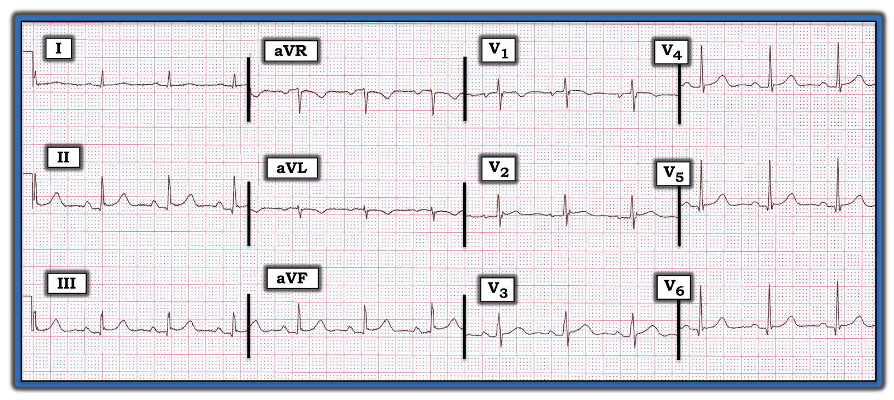
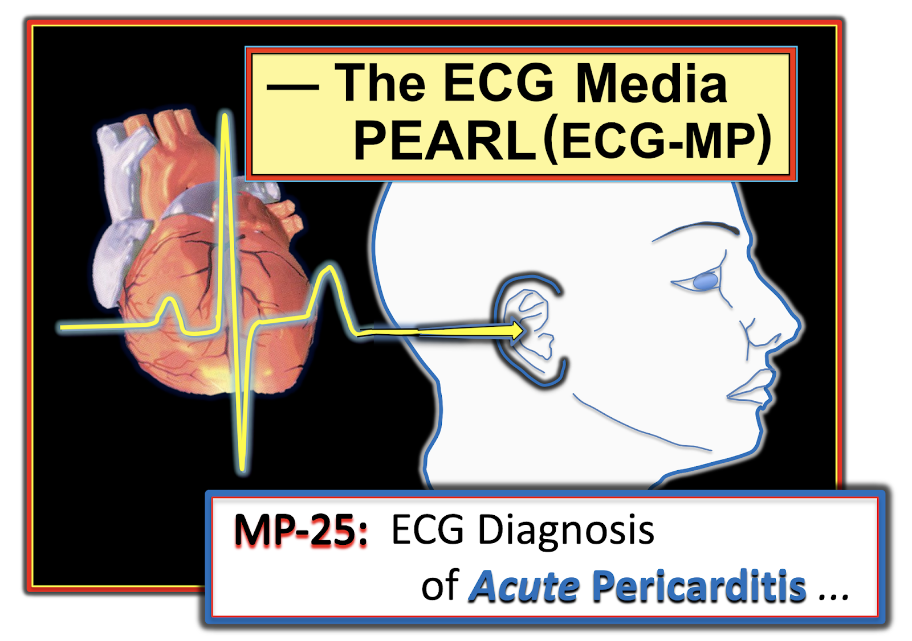
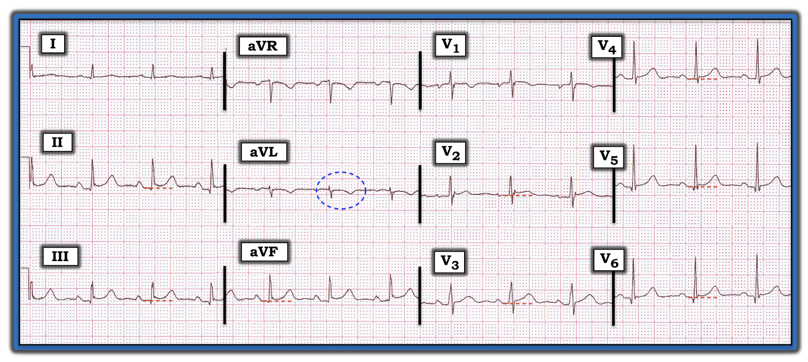
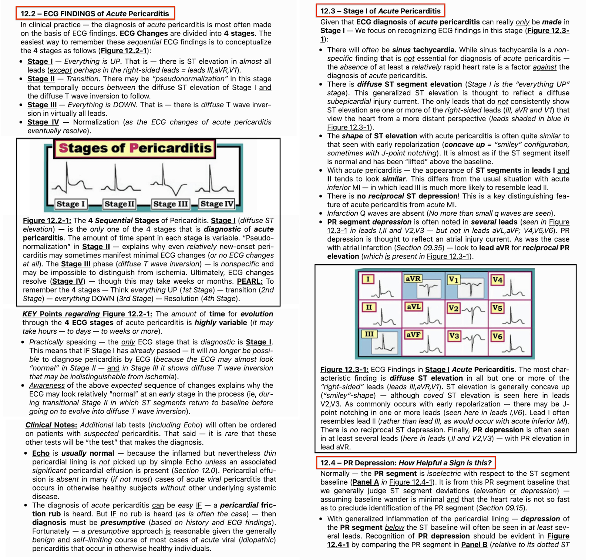

ECG Blog #208 — ST chênh lên nhưng không có bệnh sử
Kết quả đọc bằng máy tính của điện tâm đồ trong Hình-1 ghi như sau — “Nhịp xoang; Điện tâm đồ bình thường.”
- Bạn có đồng ý với kết quả đọc bằng máy tính không?
- Khi không có bất kỳ bệnh sử nào ... — các chẩn đoán cần cân nhắc của bạn là GÌ?
- Trong các khả năng này, khả năng NÀO cao nhất?


=======================================
LƯU Ý #1: Tới đây, một số bạn đọc có thể muốn nghe ECG Audio PEARL dài 9:50 phút trước khi đọc Suy nghĩ của tôi về điện tâm đồ trong Hình-1. Bạn có thể xem Suy nghĩ của tôi về bản ghi này vào bất cứ lúc nào (nằm bên dưới ECG MP-25).
=======================================


ECG Media PEARL #25 (9:50 phút Audio) hôm nay — Điểm then chốt & cạm bẫy trong chẩn đoán viêm màng ngoài tim cấp trên điện tâm đồ.
=======================================
LƯU Ý #2: Tôi đã trích một bản tóm tắt viết về “Quan điểm của tôi” trong chẩn đoán viêm màng ngoài tim cấp trên điện tâm đồ từ cuốn ECG-2014-ePub của tôi. Phần này nằm bên dưới trong Phần bổ sung (từ Hình-3 đến Hình-7).
- BẤM VÀO ĐÂY — để tải bản PDF 9 trang này về viêm màng ngoài tim.
=======================================
Cách tiếp cận CỦA TÔI với bản ghi này:
Như mọi khi — tôi ưu tiên một Cách tiếp cận hệ thống cho mọi điện tâm đồ tôi gặp (Cách tiếp cận hệ thống này được ôn lại trong ECG Blog 205). Phân tích mô tả của tôi về điện tâm đồ trong Hình-1 như sau:
- Nhịp đều, tần số ~80/phút. Sóng P dương với khoảng PR hằng định thấy ở chuyển đạo II — nên đây là nhịp xoang. Các khoảng (PR, QRS, QTc) và trục (khoảng +70 độ) bình thường. Không có lớn buồng tim.
Về Thay đổi Q-R-S-T:
- Có sóng Q nhỏ và hẹp ở các chuyển đạo dưới và các chuyển đạo trước tim bên.
- Tăng tiến sóng R đáng chú ý ở chỗ có sóng R cao hơn mong đợi ở chuyển đạo V1 — với vùng chuyển tiếp sớm xảy ra giữa V1 và V2. Bình thường, ở chuyển đạo bên phải V1 chỉ có sóng r rất nhỏ — và vùng chuyển tiếp (nơi sóng R trở nên cao hơn độ sâu của sóng S) không xảy ra trước V2–V3.
Đánh giá sóng ST-T:
- Có ST chênh lên kín đáo nhưng có thật ở nhiều chuyển đạo (các đường chấm ĐỎ nằm ngang trong Hình-2). Các đoạn ST chênh lên có dạng lõm hướng lên (tức là dạng “mặt cười”) — kèm gợi ý khía ở điểm J ở vài chuyển đạo (thấy rõ nhất ở V2 và V6).
- Việc đánh giá ST chênh lên trong Hình-2 càng khó hơn do có đoạn PR chênh xuống kín đáo nhưng có thật ở một số chuyển đạo (thấy rõ nhất ở các chuyển đạo dưới, và ở V4 và V5). Cũng có đoạn PR chênh lên nhẹ ở aVR.
- Có sóng T đảo ngược ở chuyển đạo aVL (trong hình bầu dục chấm XANH ở Hình-2).


ĐIỂM THEN CHỐT (PEARL) #1: Thuật ngữ đoạn PR chênh xuống (PR depression) thường được nhắc tới khi cân nhắc chẩn đoán viêm màng ngoài tim cấp.
- Đoạn PR được coi là chênh xuống khi đoạn PR nằm ngang bị hạ thấp hơn đường nền của đoạn ST (ở đây xác định dựa vào đường nền T-P).
- Việc thấy đoạn PR chênh lên ở aVR có thể củng cố rằng đoạn PR chênh xuống là có thật.
- Đáng tiếc — việc dùng đoạn PR chênh xuống làm tiêu chuẩn chẩn đoán viêm màng ngoài tim cấp gặp nhiều vấn đề. Gồm: i) Dương tính giả (vì các tình trạng khác, gồm nhồi máu cơ tim cấp và các biến thể tái cực bình thường, đôi khi cũng có đoạn PR chênh xuống); ii) Âm tính giả (vì đoạn PR chênh xuống không phải lúc nào cũng thấy trong viêm màng ngoài tim cấp); và, iii) Sai biệt giữa các người đọc và trong cùng một người đọc khi phát hiện đoạn PR chênh xuống (do đó, theo kinh nghiệm của tôi, độ tin cậy của dấu hiệu này bị hạn chế).
- ĐIỀU CỐT LÕI: Có lẽ tốt nhất là không dựa vào việc có thấy đoạn PR chênh xuống hay không để chẩn đoán viêm màng ngoài tim cấp.
ĐIỂM THEN CHỐT (PEARL) #2: Dù cần ghi nhận có sóng T đảo ngược đối xứng ở chuyển đạo aVL trong Hình-2 — đây không nhất thiết là dấu hiệu bất thường!
- Xét biên độ nhỏ của phức bộ QRS ở aVL — kích thước sóng T đảo ngược ở chuyển đạo này tương đối lớn. Tuy vậy — sóng T đảo ngược đôi khi có thể gặp bình thường ở aVL — nhất là khi trục mặt phẳng trán tương đối thẳng đứng và QRS chủ yếu âm ở aVL (như ta thấy trong Hình-2). Lý do là trục sóng T bình thường thường đi khá sát theo trục QRS ở các chuyển đạo mặt phẳng trán (tức là sóng T đảo ngược đơn độc có thể bình thường nếu gặp ở chuyển đạo III, aVF hoặc aVL khi phức bộ QRS chủ yếu âm ở chuyển đạo có sóng T đảo ngược đó — Xem ECG Blog #79).
- ĐIỀU CỐT LÕI: Sóng T đảo ngược mà ta thấy ở aVL trong Hình-2 có thể phản ánh hoặc không phản ánh một dấu hiệu bất thường.
ĐIỂM THEN CHỐT (PEARL) #3: Sóng R lớn hơn mong đợi ở V1, với vùng chuyển tiếp sớm (đã nêu ở trên trong phần tăng tiến sóng R) có ý nghĩa chưa rõ. Mục đích của việc đưa chữ “R” vào mẹo ghi nhớ của tôi khi đánh giá Thay đổi Q-R-S-T — chính là để không bỏ sót dấu hiệu vùng chuyển tiếp sớm.
- ĐIỀU CỐT LÕI: Danh sách các bệnh cảnh lâm sàng cần cân nhắc mỗi khi gặp sóng R cao hơn mong đợi ở V1 đã được ôn lại trong ECG Blog #81. Trong số đó có nhồi máu thành sau xảy ra vào một thời điểm nào đó. Điều này có thể liên quan tới case hôm nay — vì còn băn khoăn về ST chênh lên ở các chuyển đạo dưới và khả năng thay đổi ST-T soi gương ở aVL.
Tổng Hợp Lại Tất cả:
Cần có bệnh sử mới biết phải làm gì (nếu có) với điện tâm đồ trong Hình-1! Điện tâm đồ này là một trong nhiều bản trong một “chồng” bản ghi tôi được giao đọc tại phòng khám ngoại trú của chúng tôi (trong thời gian tôi phụ trách “đọc kết quả chính thức” điện tâm đồ cho 35 người hành nghề y của chúng tôi). Trên điện tâm đồ không ghi bất kỳ bệnh sử nào.
- Việc thứ 1 tôi làm là gạch bỏ kết quả đọc bằng máy tính của điện tâm đồ này, vốn ghi: “Nhịp xoang; Điện tâm đồ bình thường.” Dù kín đáo — không thể phủ nhận các dấu hiệu trong Phân tích mô tả ở trên: i) ST chênh lên nhẹ ở nhiều chuyển đạo; ii) sóng T đảo ngược ở aVL có thể là thay đổi soi gương; và, iii) vùng chuyển tiếp sớm với sóng R cao hơn mong đợi ở V1.
- Tôi không thể loại trừ khả năng nhồi máu cơ tim dưới-sau vào một thời điểm nào đó.
- Tôi cũng không thể loại trừ khả năng viêm màng ngoài tim có thể mới xảy ra — vì ít nhất có ST chênh lên nhẹ ở nhiều chuyển đạo hơn mức thường gặp ở các biến thể tái cực.
- Tuy vậy, “cảm nhận” của tôi (cảm giác trực giác) — là các dấu hiệu điện tâm đồ mô tả ở trên trong case hôm nay có lẽ không phải cấp tính.
- THEO DÕI: Rõ ràng tôi cần tìm hiểu bệnh sử của bệnh nhân này. Hóa ra bệnh nhân là một phụ nữ cao tuổi, không nói tiếng Anh. Qua phiên dịch, chúng tôi được biết bà không có triệu chứng tim mạch nào trong những tháng gần đây. Khám thực thể vào lúc ghi điện tâm đồ này không có gì đặc biệt. Lý do ghi điện tâm đồ có vẻ là một phần đánh giá tổng quát ở bệnh nhân mới. Bà có từng có biến cố tim mạch trước đó hay không thì chưa rõ — vì không có hồ sơ bệnh án. Xét tới bệnh sử này — tôi kết luận không có gì cấp tính trên điện tâm đồ của bà, và hiện không cần thăm dò thêm do bà đã cao tuổi và không có triệu chứng tim mạch.
ĐIỂM THEN CHỐT (PEARL) #4: Mỗi điện tâm đồ kể một câu chuyện. Không có bệnh sử lâm sàng — câu chuyện ấy không trọn vẹn. Tôi thấy thật khiêm nhường (và thiết yếu về mặt lâm sàng) khi nhận ra — rằng những dấu hiệu giống hệt nhau trên điện tâm đồ có thể dẫn tới nhận định lâm sàng khác hẳn nhau tùy vào tình trạng của bệnh nhân vào thời điểm ghi điện tâm đồ.
- Nếu bệnh sử trong case hôm nay là một người trẻ tuổi mới bị nhiễm virus kèm đau ngực kiểu màng phổi — điện tâm đồ này có thể đã phù hợp với viêm màng ngoài tim mới xảy ra (hoặc cấp).
- Nếu bệnh sử là một người trung niên hoặc lớn tuổi hơn bị đau ngực khởi phát từ ngày hôm trước — ta sẽ không thể loại trừ khả năng nhồi máu cơ tim dưới-sau mới xảy ra (hoặc cấp) chỉ dựa vào một bản ghi duy nhất này.
- Vì vậy — đối chiếu lâm sàng là một phần thiết yếu trong việc đọc điện tâm đồ của chúng ta.
- Tuy vậy, theo định nghĩa — kết quả đọc bằng máy tính được đưa ra không có lợi thế của bệnh sử lâm sàng.
==================================
PHẦN BỔ SUNG (ngày 27 tháng 3 năm 2021): Trong 5 hình sau — tôi đăng bản tóm tắt viết từ cuốn ECG-2014-ePub của tôi về chẩn đoán Viêm màng ngoài tim cấp trên điện tâm đồ.
- BẤM VÀO ĐÂY — để tải bản PDF 9 trang về viêm màng ngoài tim có trong Hình-3 đến 7.
- Một tiêu chuẩn bổ sung đôi khi được nêu là hữu ích để chẩn đoán viêm màng ngoài tim cấp — là Tỉ số ST/sóng T ở chuyển đạo V6 (Mời xem Bình luận của tôi ở CUỐI trang trong bài đăng ngày 13 tháng 12 năm 2019 trên Dr. Smith's ECG Blog).





==============================
Các bài ECG Blog liên quan tới case hôm nay:
- ECG Blog #205 — Ôn lại Cách tiếp cận hệ thống của tôi khi đọc điện tâm đồ 12 chuyển đạo (tóm lược trong Hình-2 và -3, và là chủ đề của Audio Pearl MP-23-LINK trong Blog #205).
- ECG Blog #79 — Ôn lại những chuyển đạo nào bình thường có thể có sóng Q và/hoặc sóng T đảo ngược.
- ECG Blog #81 — Ôn lại các nguyên nhân thường gặp của sóng R cao ở chuyển đạo V1.
- ECG Blog #207 — Báo cáo điện tâm đồ bằng máy tính: Bạn hay thù?
- Mời xem Bình luận của tôi (ở CUỐI trang trong bài đăng ngày 13 tháng 12 năm 2019 trên Dr. Smith's ECG Blog) — về khả năng dùng Tỉ số ST/sóng T ở chuyển đạo V6.